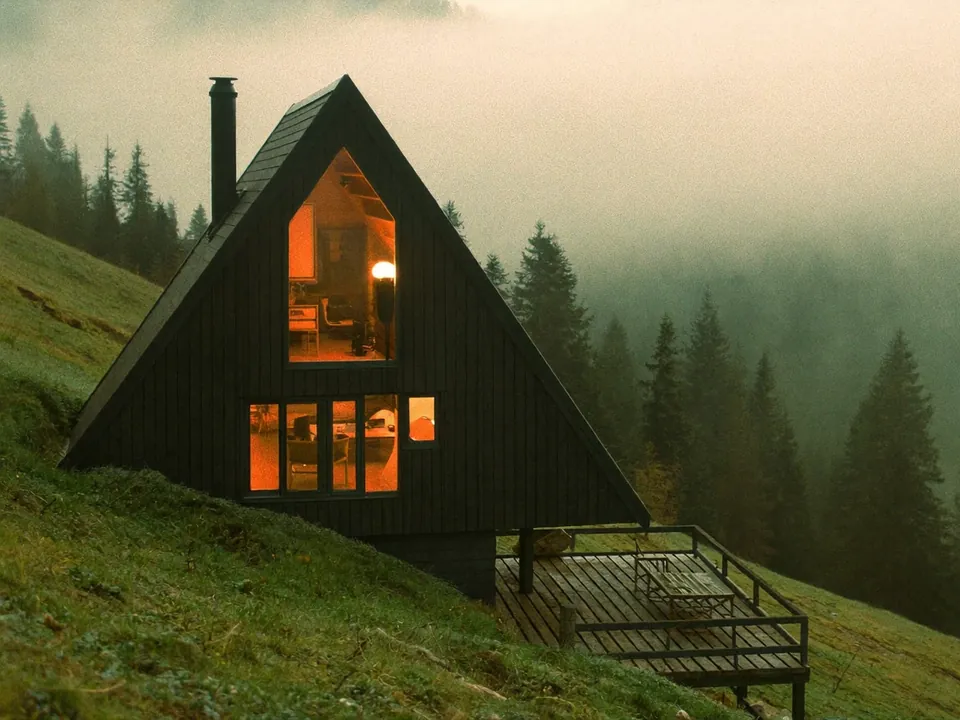
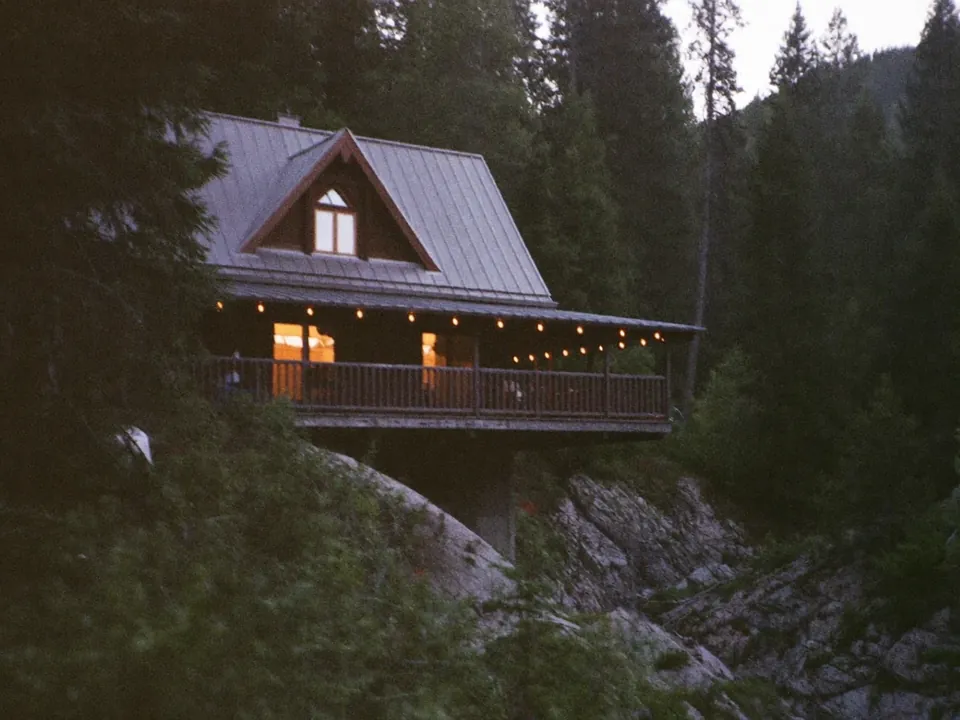
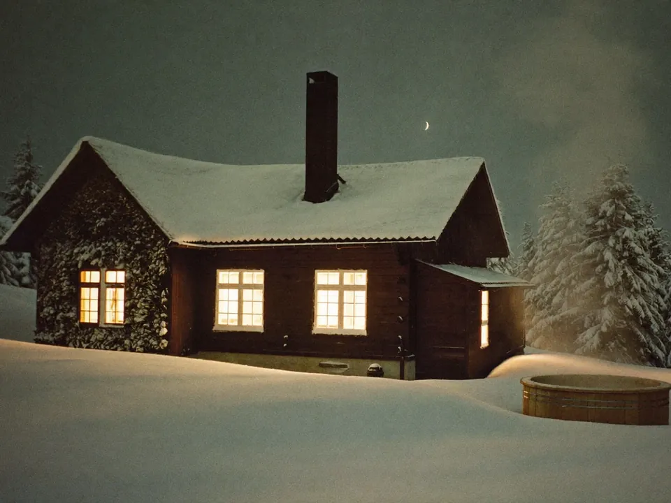
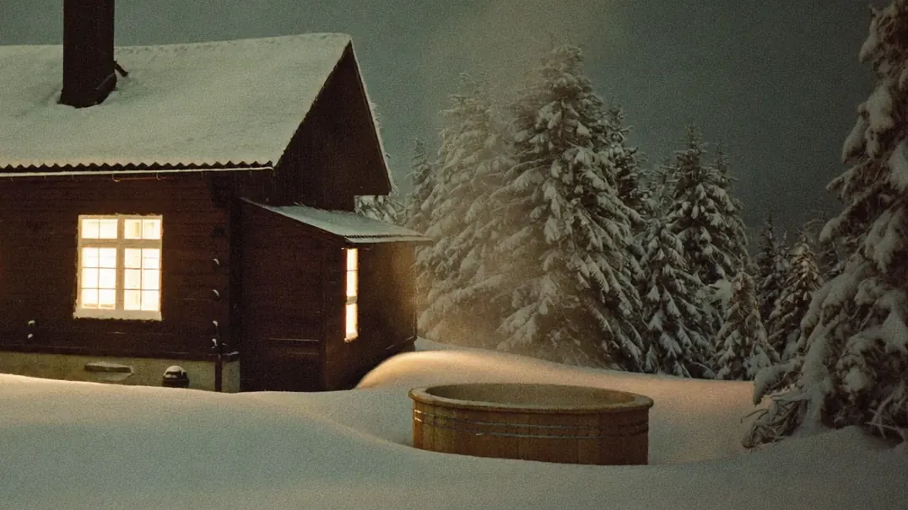

Вільно з 24 жовтня«Чорниця»
A-frame для двох. Панорамне вікно на гори, камін і ліжко на антресолі.
- Камін
- Панорамне вікно
- Кавоварка
2 900 ₴ / ніч
Обрати
Микуличин, Карпати640 м над рівнем моря
Шість дерев’яних будиночків у смерековому лісі біля Яремче. У кожного своя тераса з видом на гори, до сусідів 80 метрів.
Будиночки
Усі зведені з карпатської смереки у 2024 році. Постіль, рушники, посуд і дрова вже на місці.

Вільно з 24 жовтняA-frame для двох. Панорамне вікно на гори, камін і ліжко на антресолі.

Вільно з 31 жовтняДві спальні, кухня та тераса над гірським потічком.

Вільно з 7 листопадаТри спальні, власний чан на дровах і окремий вхід з лісу.
Чим зайнятися
Так виглядає звичайна субота наших гостей. Нічого з цього не обов’язково.
Туман у долиніКава на терасі, поки ліс прокидається.
СніданокБринза, банош і мед від сусідки пані Марії.
СтежкаВодоспад Пробій або підйом на Хом’як.
ОбідКолиба в Яремче й прогулянка над Прутом.
ЧанТрави, підсвітка й гірський потічок поруч.
ЗоріБез засвітки міста. Тиша, яку чути.
Маршрути, інструкторів і прокат підкажемо на місці.
Чан і сауна
Чавунний чан на дровах із карпатськими травами: чебрець, м’ята, ялівець. Розпалюємо за дві години до вашого часу, увечері вмикаємо підсвітку.

Як доїхати
До кожного будиночка веде асфальт, останні 300 метрів гравій. Паркування безкоштовне.
Відгуки
Вимкнули телефони на другий день і не помітили. Вранці туман просто у вікні, ввечері чан під зорями. Повернемося взимку.
Їхали з двома дітьми й собакою. Будиночок теплий, усе чисто, господарі підказали маршрут на Хом’як без натовпу.
Світло в селі зникало двічі, а в нас усе працювало: панелі, акумулятори, Starlink. Можна спокійно працювати віддалено.
Так. Кожен будиночок має сонячні панелі з акумуляторами, на ділянці є генератор і Starlink на 50–150 Мбіт/с.
Так, у «Чорницю» та «Брусницю». Доплата 300 ₴ за весь заїзд, миску й підстилку дамо.
Постіль, рушники, посуд і дрова вже є. Візьміть трекінгове взуття й дощовик: у горах погода змінюється за годину.
Безкоштовно за 14 днів до заїзду. Пізніше утримуємо передоплату 30%.
На зв’язку з 9:00 до 22:00
Відповідаємо протягом години. Передоплата 30% на рахунок ФОП, решта при заїзді.